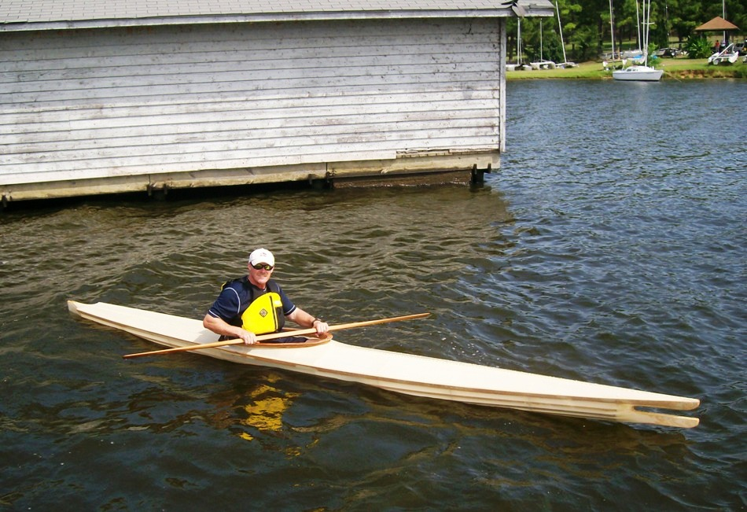

| Nikumi by Clayton Plunkett (US) | Menu Previous Page Next Page |
|

Clayton's comments...."Some details of this build are WRC stringers a cypress deck beam .5 inch ply stations. It has 8 oz polyester skin with Zar coating. The skin came from Dyson and sewed and shrank very well. I spent less than 200 dollars and about 60 to 80 hours. This has been a blast to build and now will be even more fun to paddle."
|
|